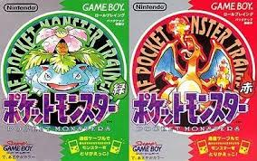

Tudo sobre Pokémom: Uma jornada pelo Mundo Digital
O Início de Tudo: De Colecionador de Insetos a Fenômeno Global
A franquia Pokémon nasceu da imaginação de Satoshi Tajiri, um japonês apaixonado por colecionar insetos na
infância. Ele queria transformar a emoção de capturar, treinar e trocar criaturas em uma experiência digital.
.jpeg)
A ideia surgiu na década de 1990, quando ele percebeu que as crianças estavam passando menos tempo ao ar livre e mais tempo em casa jogando videogame.
Com a ajuda da Nintendo e de Shigeru Miyamoto (o criador de Mario), o projeto, inicialmente chamado
"Capsule Monsters", foi lançado como "Pocket Monsters" em 1996, com os jogos Pokémon Red e Pokémon Green para o Game Boy no Japão.

A Expansão do Universo Pokémon
O sucesso da franquia não se limitou aos videogames. Pokémon rapidamente se tornou um fenômeno cultural global com a expansão para diversas mídias:
- Jogos: A franquia continuou a lançar jogos de RPG para consoles portáteis e de mesa, como a série principal
(Gold/Silver, Ruby/Sapphire, etc.) e spin-offs como Pokémon GO e Pokémon Mystery Dungeon.
- Anime: O anime de Pokémon, que estreou em 1997, conta as aventuras de Ash Ketchum em sua jornada para se
tornar um Mestre Pokémon. A série é um dos animes mais duradouros da história.
- Filmes: Dezenas de filmes de Pokémon foram lançados, tanto para o cinema quanto para a televisão, expandindo
as histórias e lendas do universo.
- Cartas Colecionáveis: O Pokémon Trading Card Game (TCG) se tornou um dos jogos de cartas mais populares do mundo,
com milhões de jogadores e colecionadores.
- Merchandising: Roupas, brinquedos, pelúcias e uma infinidade de produtos transformaram Pokémon em um dos maiores ícones do entretenimento.
O Conceito Principal
O coração de Pokémon está na ideia de que os humanos podem capturar e fazer amizade com criaturas misteriosas chamadas Pokémon.
Os jogadores, ou "Treinadores Pokémon", viajam pelo mundo para:
- Capturar e Treinar: Usando Pokébolas, os treinadores capturam novos Pokémon e os treinam para ficarem mais fortes.
- Batalhar: Os Pokémon lutam uns contra os outros em batalhas estratégicas.
- Colecionar: O objetivo final de muitos treinadores é "completar a Pokédex", um catálogo que registra todos os Pokémon daquela região.
.jpeg)
A franquia Pokémon se baseia em valores como amizade, perseverança e a importância de cuidar dos outros. É uma jornada contínua de descobertas
e aventuras que conquistou e continua a conquistar fãs de todas as idades.
Como surgiu Pokémon
assista o video no
youtube